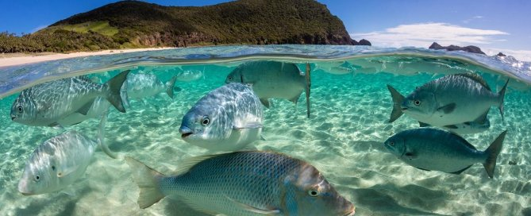
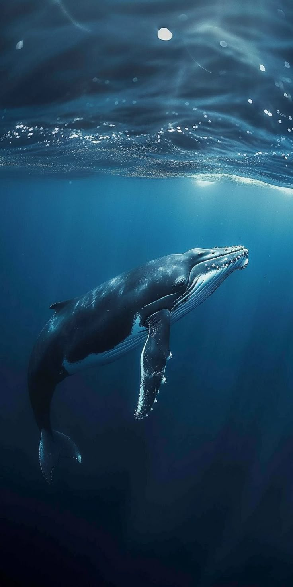
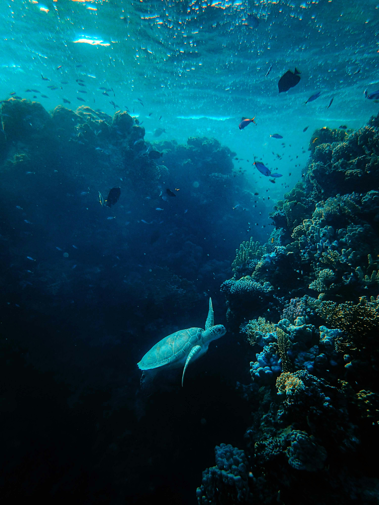

Dedicated to protecting and preserving marine ecosystems, the Ocean Conservation Initiative of Our Seascape website aligns with UN's Sustainable Development Goal 14: Life Below Water. We focus on reducing marine pollution, protecting marine biodiversity, and promoting the need to take a stand up and help our mother nature through volunteer activities.
Through collaborative efforts, we work to ensure the long-term health of our oceans and the communities that depend on them, while fostering a deeper understanding of marine conservation among future generations.

Explore the rich diversity of life in our vast oceans and enjoy it's majestic splendor.
Learn More
Discover the diverse species of marine mammals living in the vast ocean and learn about the importance of preserving aquatic ecosystems.
Learn More
Learn about the various regional seas and the unique ecosystems they support, from the Caribbean Sea to the Mediterranean Sea.
Learn More